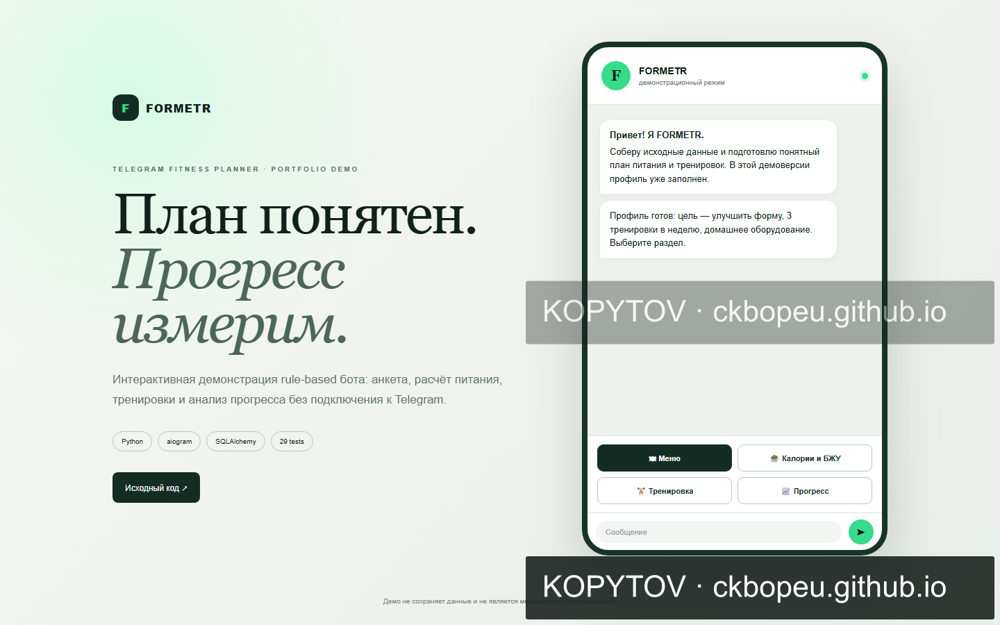

TELEGRAM-БОТ
FORMETR
Бот для планирования тренировок и питания с анкетой, расчётами и отслеживанием прогресса.

О проекте
Самостоятельный демонстрационный проект, подготовленный для показа интерфейса и решений реализации.
Реализованные функции
- Python, aiogram и SQLAlchemy
- Миграции базы и Docker-развёртывание
- 29 автотестов